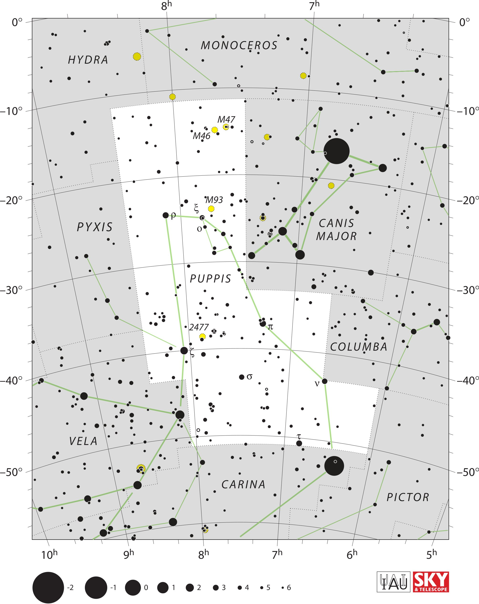

<div data-role="page" id="puppis" data-theme="a">

	<div data-role="header">
		<a href="#home" data-icon="back" data-rel="back">Back</a>
		<h1>Puppis</h1>
		<a href="#home" data-icon="home">Home</a>
	</div>

	<div data-role="content">
		<div class="cssImageMap">
			

			<a href="../messier/m46.html" class="messier" data-x="810"
				data-y="520" data-width="90" , data-height="100"></a>
				
			<a href="../messier/m47.html" class="messier" data-x="910"
				data-y="480" data-width="100" , data-height="100"></a>
				
			<a href="../messier/m93.html" class="messier" data-x="850"
				data-y="810" data-width="100" , data-height="100"></a>


			<a href="hydra.html" class="constellation" data-side="left" data-x="270" data-y="210"
				data-width="200" data-height="70"></a>

			<a href="monoceros.html" class="constellation" data-side="right" data-x="830"
				data-y="150" data-width="400" data-height="70"></a>


			<a href="canisMajor" class="constellation" data-side="right" data-x="1320"
				data-y="900" data-width="250" data-height="130"></a>

		</div>

		<div id="here">
			<h2>Pisces</h2>

			<p>Image Credit: IAU and Sky & Telescope magazine (Roger Sinnott
				& Rick Fienberg)
		</div>
	</div>
</div>
